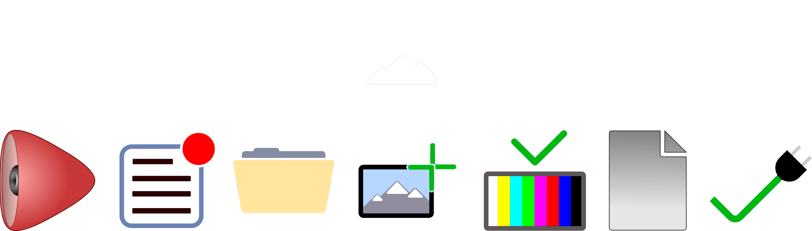

Simplicity. Recognizability. Scalability

While the above icons may appear to be unrelated, taking a closer look at the four rightmost icons, you may notice a commonality. They all share the rounded 90 degree angle corner as a key portion of the depiction.
Furthermore, several of the icons can be thought of as "sub-icons" to others, an example is represented below. An example where something like this could be used is something along the lines of a Google Drive esque suite. In this case several icons such as document, or specific file types (like pictured below) as well as actions like adding an image, or even notification indicators for changes/updates.
In addition, 3 of the above icons were actually utilized in an application together for another assignment (CSE219 application assignment).
Here are several extranous icons.
The final icon is actually an icon I had used in a personal project released publically, which was designed to change iOS notification banner colors to match the color of the icon. Its correlation to the icon comes from first the reference to notifications, and secondly to the name of the package. You can learn more about Cheader here.